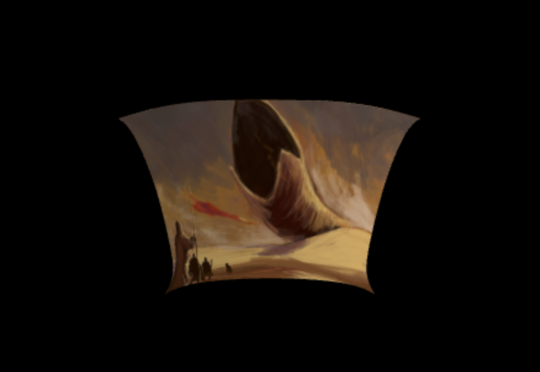

Hi, I recently graduated from UMD: College Park. I'm interested in anything that runs on a GPU. I've done many projects with WebGL and

Having only recently dove into GPU programming, it's really got me thinking about paralellism and SIMD architectures. If the delay/forced flush involved with reading back from a GPU wasn't a performance death wish, new possibilities would balloon. So are there any promising experiments The implications for gaming and machine learning are the first to come to mind, but I assume such a paradigm shift isn't relevant to consumer markets...
The HoloLens spatial mapping system creates a pretty accurate mesh overlay of the room. That much is clear, but it seems too accurate to me. I dont need a mesh of triangles to represent a rectangular table with nothing on it, I only need 12, practically only 2. The HoloLens 2 seems to have built in DL capabilities for semantic object recognition, but would a "shape classifier" be better? I'm interested in CNN-based approaches to filtering spatial maps